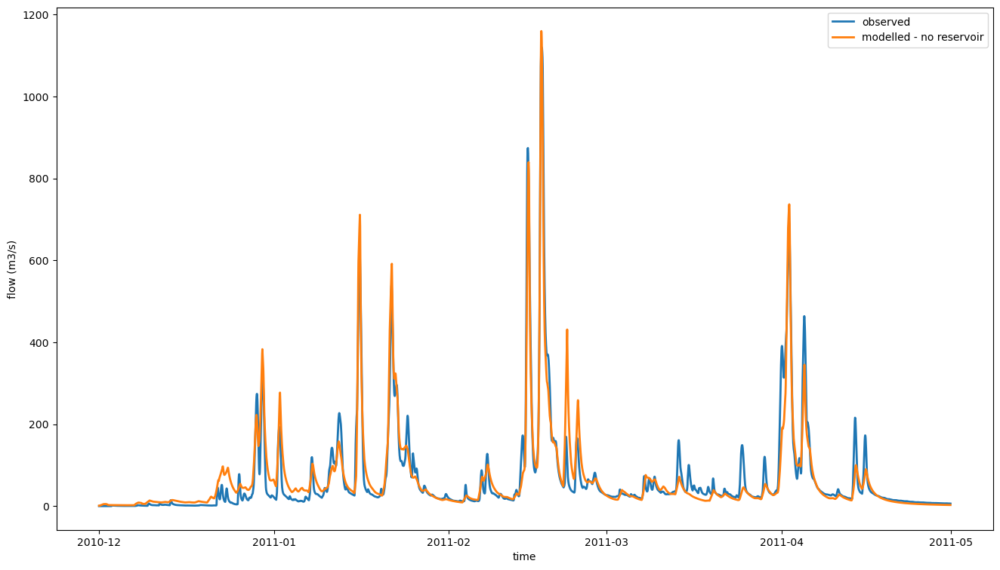
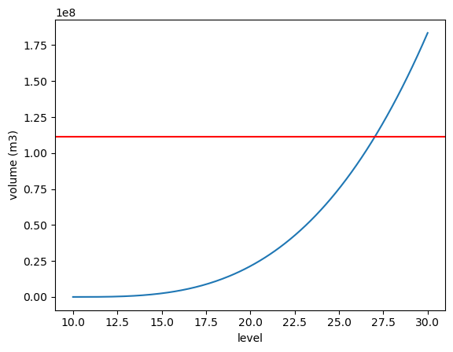
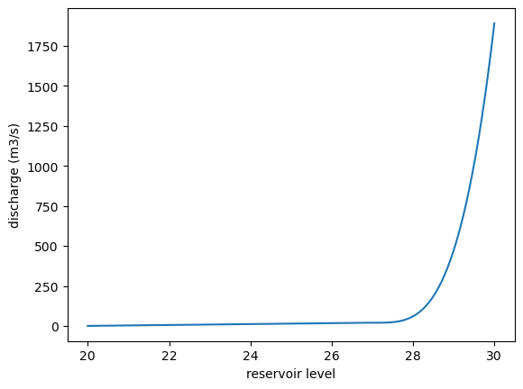
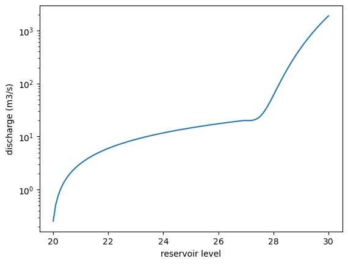
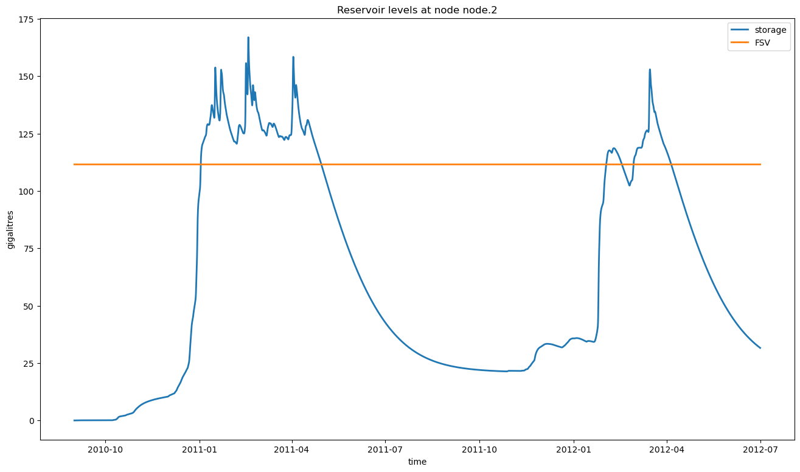
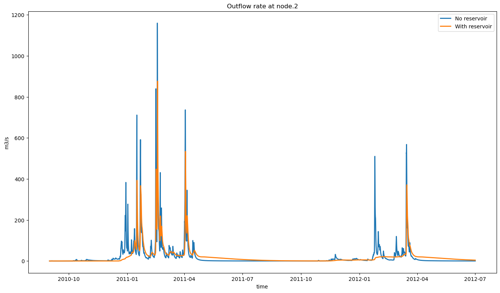
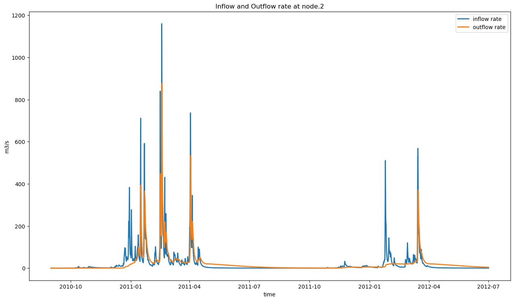

Reservoir geometry¶
About this document¶
from swift2.doc_helper import pkg_versions_info
print(pkg_versions_info("This document was generated from a jupyter notebook"))
This document was generated from a jupyter notebook on 2025-03-27 17:26:37.302534
swift2 2.5.1
uchronia 2.6.2
from cinterop.timeseries import xr_ts_end, xr_ts_start
from swift2.doc_helper import (
configure_hourly_gr4j,
define_parameteriser_gr4j_muskingum,
sample_catchment_model,
sample_series,
)
from swift2.simulation import swap_model
from swift2.utils import mk_full_data_id
from swift2.vis import plot_two_series
Model structure¶
Note: Setting up this model prior to adding a reservoir node is not the primary purpose of this vignette, so you may skip this section.
catchmentStructure = sample_catchment_model(site_id = "Adelaide", config_id = "catchment")
hydromodel = "GR4J"
channel_routing = 'MuskingumNonLinear'
hydroModelRainfallId = 'P'
hydroModelEvapId = 'E'
# set models
insimulation = swap_model(catchmentStructure, model_id = hydromodel ,what = "runoff")
simulation = swap_model(insimulation, model_id = channel_routing ,what = "channel_routing")
saId = simulation.get_subarea_ids()
assert len(saId) == 1
precipTs = sample_series(site_id = "Adelaide", var_name = "rain")
evapTs = sample_series(site_id = "Adelaide", var_name = "evap")
flowRateTs = sample_series(site_id = "Adelaide", var_name = "flow")
['subarea.1.P']
simulation.play_input(precipTs, mk_full_data_id('subarea', saId, hydroModelRainfallId))
simulation.play_input(evapTs, mk_full_data_id('subarea', saId, hydroModelEvapId))
configure_hourly_gr4j(simulation)
simulation.set_simulation_time_step('hourly')
# Small time interval only, to reduce runtimes in this vignette
from uchronia.time_series import mk_date
simstart = mk_date(2010,9,1)
simend = mk_date(2012,6,30,23)
simwarmup = simstart
simulation.set_simulation_span(simstart, simend)
def templateHydroParameterizer(simulation):
return define_parameteriser_gr4j_muskingum(ref_area=250.0,
time_span=3600,
simulation=simulation,
objfun="NSE",
delta_t=1.0,
param_name_k='Alpha')
nodeId = 'node.2'
flowId = mk_full_data_id(nodeId, 'OutflowRate')
simulation.record_state(flowId)
We use pre-calibrated hydrologic parameters
p = templateHydroParameterizer(simulation)
p.set_min_parameter_value('R0', 0.0)
p.set_max_parameter_value('R0', 1.0)
p.set_min_parameter_value('S0', 0.0)
p.set_max_parameter_value('S0', 1.0)
p.set_parameter_value('log_x4', 1.017730e+00)
p.set_parameter_value('log_x1', 2.071974e+00 )
p.set_parameter_value('log_x3', 1.797909e+00 )
p.set_parameter_value('asinh_x2', -1.653842e+00)
p.set_parameter_value('R0', 2.201930e-11 )
p.set_parameter_value('S0', 3.104968e-11 )
p.set_parameter_value('X', 6.595537e-03 ) # Gotcha: needs to be set before alpha is changed.
p.set_parameter_value('Alpha', 6.670534e-01 )
p
Name Value Min Max
0 log_x4 1.017730e+00 0.000000 2.380211
1 log_x1 2.071974e+00 0.000000 3.778151
2 log_x3 1.797909e+00 0.000000 3.000000
3 asinh_x2 -1.653842e+00 -3.989327 3.989327
4 R0 2.201930e-11 0.000000 1.000000
5 S0 3.104968e-11 0.000000 1.000000
6 X 6.595537e-03 0.001000 0.016622
7 Alpha 6.670534e-01 0.011162 1.681129
We get a visual on the output of the catchment simulation.
sViz = mk_date(2010,12,1)
eViz = mk_date(2011,4,30,23)
def subsetPlot(tts):
from cinterop.timeseries import ts_window
return ts_window(tts, from_date=sViz, to_date=eViz)
def plot_obs_vs_calc(obs, calc, names= None, ylab="flow (m3/s)"):
obs = subsetPlot(obs)
calc = subsetPlot(calc)
return plot_two_series(obs, calc, ylab=ylab, names=names, start_time = xr_ts_start(calc), end_time = xr_ts_end(calc))
p.apply_sys_config(simulation)
A look at the model simulation prior to setting up a reservoir¶
simulation.exec_simulation()
catchmentOutflowNoReservoir = simulation.get_recorded(flowId)
plot_obs_vs_calc(flowRateTs, catchmentOutflowNoReservoir, names=["observed", "modelled - no reservoir"])

From here on we will only work with modelled time series, as the reservoir set up will be synthetic and there is no real observations to "match".
Set up the reservoir model¶
The catchment is simple, with node 2 being the outlet of the catchment so this is where we will add the reservoir
{'subareas': {'1': 'Subarea_1'},
'nodes': {'2': 'Outlet', '1': 'Node_1'},
'links': {'1': 'Subarea_1'}}
(['2', '1'], ['Outlet', 'Node_1'])
We create a synthetic, simple reservoir geometry (level-volume-area) for this vignette.
import numpy as np
def seq(start, stop, by):
import math
assert by > 0
n = int(math.floor( (stop - start + 1) / by ))
return np.linspace(start=start, stop=(start+n*by-1), num=n)
array([1., 2., 3., 4., 5., 6.])
array([1., 2., 3., 4., 5.])
import numpy as np
levels = seq(start=10.0, stop=30, by=0.1)
volumes = (levels - 10) ** 3.1 * 17000
area = volumes * 0.0
array([False, False, False, False, False, False, False, False, False,
False, False, False, False, False, False, False, False, False,
False, False, False, False, False, False, False, False, False,
False, False, False, False, False, False, False, False, False,
False, False, False, False, False, False, False, False, False,
False, False, False, False, False, False, False, False, False,
False, False, False, False, False, False, False, False, False,
False, False, False, False, False, False, False, False, False,
False, False, False, False, False, False, False, False, False,
False, False, False, False, False, False, False, False, False,
False, False, False, False, False, False, False, False, False,
False, False, False, False, False, False, False, False, False,
False, False, False, False, False, False, False, False, False,
False, False, False, False, False, False, False, False, False,
False, False, False, False, False, False, False, False, False,
False, False, False, False, False, False, False, False, False,
False, False, False, False, False, False, False, False, False,
False, False, False, False, False, False, False, False, False,
False, False, False, False, False, False, False, False, False,
False, False, False, False, False, False, False, True, True,
True, True, True, True, True, True, True, True, True,
True, True, True, True, True, True, True, True, True,
True, True, True, True, True, True, True, True, True,
True, True, True])
np.float64(111555356.428012)
Our synthetic dam can hold 111 millon cubic metres at full supply volume.
import matplotlib.pyplot as plt
plt.plot(levels, volumes)
plt.xlabel("level")
plt.ylabel("volume (m3)")
# Add a horizontal line at y = fsv
plt.axhline(y=fsv, color='r', linestyle='-');

level-discharge relationships¶
We also create synthetic level-discharge relationships. These define the minimum and maximum outflow rates for a reservoir, given its current level. This is a generic way to capture the behavior of many reservoirs; the minimum discharge curve is typically capture the uncontrolled overspill. The maximum discharge curve is for the outflow rate with all outlets and spillway gates open. Specialisations of this reservoir (for instance as inheriting C++ classes) can then refine the behavior with additional rules on the controlled releases.
In this example for the sake of simplicity we set up identical minimal and maximal curves. Let's say the reservoir spills above 27 metres, and between 20 and 27 the outflow rate is a linear function of the level above 20 metres datum.
min_d_levels = seq(start=20, stop=fsv_height-0.01, by=0.1)
max_outlet_rate = 20 # outlet cumecs at or near full supply volume
discharge = np.linspace( 1, len(min_d_levels), num=len(min_d_levels)) / len(min_d_levels) * max_outlet_rate
min_d_levels_spill = seq(start=fsv_height, stop=30, by=0.1)
# we define a spillover discharge function that is purely synthetic; basically made up to "work" with the sample data.
discharge_spill = (min_d_levels_spill - fsv_height) ** 3.5 * 40 + max_outlet_rate
min_d_levels = np.concatenate([min_d_levels, min_d_levels_spill])
discharge = np.concatenate([discharge, discharge_spill])

plt.plot(min_d_levels, discharge)
plt.xlabel("reservoir level")
plt.yscale("log") # Set the y-axis to a logarithmic scale
plt.ylabel("discharge (m3/s)");

simulation.set_reservoir_min_discharge(nodeId, min_d_levels, discharge)
simulation.set_reservoir_max_discharge(nodeId, min_d_levels, discharge)
Let's see the resulting behavior of this storage
['node.2.InflowRate',
'node.2.InflowVolume',
'node.2.AdditionalInflowRate',
'node.2.OutflowRate',
'node.2.OutflowVolume',
'node.2.reservoir.Diversion',
'node.2.reservoir.cRelease',
'node.2.reservoir.PreviousDiversion',
'node.2.reservoir.PreviouscRelease',
'node.2.reservoir.PrevioussFlow',
'node.2.reservoir.Seepage',
'node.2.reservoir.PreviousSeepage',
'node.2.reservoir.rainfall',
'node.2.reservoir.pet',
'node.2.reservoir.PreviousInflowRate',
'node.2.reservoir.PreviousOutflowRate',
'node.2.reservoir.PreviousStorage',
'node.2.reservoir.InflowRate',
'node.2.reservoir.OutflowRate',
'node.2.reservoir.Storage']
The reservoir model has several states to influence the mass balance. For simplicity in this vignette we will leave these at zero, but it is possible to "play" time series.
simulation.record_state(mk_full_data_id(nodeId, 'reservoir.Storage'))
simulation.record_state(mk_full_data_id(nodeId, 'reservoir.OutflowRate'))
simulation.record_state(mk_full_data_id(nodeId, 'reservoir.InflowRate'))
simulation.exec_simulation()
st = simulation.get_recorded(mk_full_data_id(nodeId, 'reservoir.Storage'))
st_gl = st / 1e6 # m3 to GL
hline = st_gl.copy()
hline[:] = fsv / 1e6
plot_two_series(st_gl, hline, names=['storage','FSV'], ylab='gigalitres', title=f"Reservoir levels at node {nodeId}")

Effect of the reservoir; changed catchment outflow¶
plot_two_series(catchmentOutflowNoReservoir, catchmentOutflowWithReservoir,
names=["No reservoir", "With reservoir"],
ylab='m3/s',
title=f"Outflow rate at {nodeId}")

<xarray.DataArray (variable_identifiers: 1, ensemble: 1, time: 16056)> Size: 128kB
array([[[0. , 0. , 0. , ..., 4.09947517,
4.09481659, 4.0901634 ]]], shape=(1, 1, 16056))
Coordinates:
* ensemble (ensemble) int64 8B 0
* time (time) datetime64[ns] 128kB 2010-09-01 ... 2012-06-...
* variable_identifiers (variable_identifiers) object 8B 'node.2.OutflowRate'simulation.get_recorded(mk_full_data_id(nodeId, 'reservoir.Storage'))
orate = simulation.get_recorded(mk_full_data_id(nodeId, 'reservoir.OutflowRate'))
irate = simulation.get_recorded(mk_full_data_id(nodeId, 'reservoir.InflowRate'))
plot_two_series(irate, orate,
names=["inflow rate", "outflow rate"],
ylab='m3/s',
title=f"Inflow and Outflow rate at {nodeId}")
